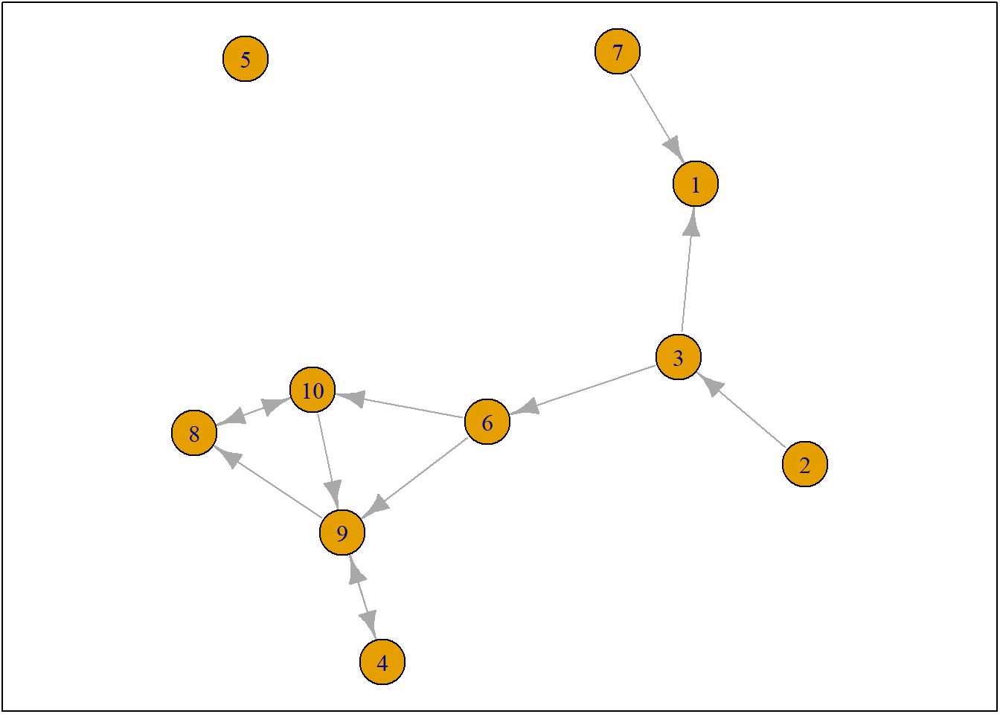

Last compiled on oktober, 2024
Set up
# start with clean workspace
rm(list = ls())
UDF
fpackage.check <- function(packages) {
lapply(packages, FUN = function(x) {
if (!require(x, character.only = TRUE)) {
install.packages(x, dependencies = TRUE)
library(x, character.only = TRUE)
}
})
}
fsave <- function(x, file = NULL, location = "./data/processed/") {
ifelse(!dir.exists("data"), dir.create("data"), FALSE)
ifelse(!dir.exists("data/processed"), dir.create("data/processed"), FALSE)
if (is.null(file))
file = deparse(substitute(x))
datename <- substr(gsub("[:-]", "", Sys.time()), 1, 8)
totalname <- paste(location, datename, file, ".rda", sep = "")
save(x, file = totalname) #need to fix if file is reloaded as input name, not as x.
}
fload <- function(filename) {
load(filename)
get(ls()[ls() != "filename"])
}
fshowdf <- function(x, ...) {
knitr::kable(x, digits = 2, "html", ...) %>%
kableExtra::kable_styling(bootstrap_options = c("striped", "hover")) %>%
kableExtra::scroll_box(width = "100%", height = "300px")
}
Packages
packages = c("RSiena", "RsienaTwoStep", "igraph")
# fpackage.check(packages) # devtools::install_github('JochemTolsma/RsienaTwoStep',
# build_vignettes=TRUE) packages = c('RsienaTwoStep')
fpackage.check(packages)
#> [[1]]
#> NULL
#>
#> [[2]]
#> NULL
#>
#> [[3]]
#> NULL
Modeling Logic
#> [,1] [,2] [,3] [,4] [,5] [,6] [,7] [,8] [,9] [,10]
#> [1,] 0 0 0 0 0 0 0 0 0 0
#> [2,] 0 0 1 0 0 0 0 0 0 0
#> [3,] 1 0 0 0 0 1 0 0 0 0
#> [4,] 0 0 0 0 0 0 0 0 1 0
#> [5,] 0 0 0 0 0 0 0 0 0 0
#> [6,] 0 0 0 0 0 0 0 0 1 1
#> [7,] 1 0 0 0 0 0 0 0 0 0
#> [8,] 0 0 0 0 0 0 0 0 0 1
#> [9,] 0 0 0 1 0 0 0 1 0 0
#> [10,] 0 0 0 0 0 0 0 1 1 0
net1g <- graph_from_adjacency_matrix(ts_net1, mode = "directed")
coords <- layout_(net1g, nicely()) #let us keep the layout
par(mar = c(0.1, 0.1, 0.1, 0.1))
{
plot.igraph(net1g, layout = coords)
graphics::box()
}

set.seed(24553253)
ego <- ts_select(net = ts_net1, steps = 1) #in rsienatwostep two actors may make a change together but here not
ego
#> [1] 4
options <- ts_alternatives_ministep(net = ts_net1, ego = ego)
# options
plots <- lapply(options, graph_from_adjacency_matrix, mode = "directed")
par(mar = c(0, 0, 0, 0) + 0.1)
par(mfrow = c(1, 2))
fplot <- function(x) {
plot.igraph(x, layout = coords, margin = 0)
graphics::box()
}
lapply(plots, fplot)
#> [[1]]
#> NULL
#>
#> [[2]]
#> NULL
#>
#> [[3]]
#> NULL
#>
#> [[4]]
#> NULL
#>
#> [[5]]
#> NULL
#>
#> [[6]]
#> NULL
#>
#> [[7]]
#> NULL
#>
#> [[8]]
#> NULL
#>
#> [[9]]
#> NULL
#>
#> [[10]]
#> NULL
# ts_degree(net = options[[1]], ego = ego) or for all options
lapply(options, ts_degree, ego = ego)
#> [[1]]
#> [1] 2
#>
#> [[2]]
#> [1] 2
#>
#> [[3]]
#> [1] 2
#>
#> [[4]]
#> [1] 1
#>
#> [[5]]
#> [1] 2
#>
#> [[6]]
#> [1] 2
#>
#> [[7]]
#> [1] 2
#>
#> [[8]]
#> [1] 2
#>
#> [[9]]
#> [1] 0
#>
#> [[10]]
#> [1] 2
lapply(options, ts_recip, ego = ego)
#> [[1]]
#> [1] 1
#>
#> [[2]]
#> [1] 1
#>
#> [[3]]
#> [1] 1
#>
#> [[4]]
#> [1] 1
#>
#> [[5]]
#> [1] 1
#>
#> [[6]]
#> [1] 1
#>
#> [[7]]
#> [1] 1
#>
#> [[8]]
#> [1] 1
#>
#> [[9]]
#> [1] 0
#>
#> [[10]]
#> [1] 1
Evaluation
Function
Calculate the probability of ego 4 and option 4
option <- 4
ts_degree(options[[option]], ego = ego) * -1 + ts_recip(options[[option]], ego = ego) * 1.5
#> [1] 0.5
# This is the value of ego 4 and option 4
eval <- ts_eval(net = options[[option]], ego = ego, statistics = list(ts_degree, ts_recip), parameters = c(-1,
1.5))
eval
#> [1] 0.5
eval <- sapply(options, FUN = ts_eval, ego = ego, statistics = list(ts_degree, ts_recip), parameters = c(-1,
1.5))
eval
#> [1] -0.5 -0.5 -0.5 0.5 -0.5 -0.5 -0.5 -0.5 0.0 -0.5
print("network with maximum evaluation score:")
#> [1] "network with maximum evaluation score:"
#> [1] 4
# p <- sapply(eval, exp)/sum(eval)
choice <- sample(1:length(eval), size = 1, prob = exp(eval)/sum(exp(eval)))
print("choice:")
#> [1] "choice:"
#> [1] 10
# print('network:') options[[choice]]
Stopping Rule
rate <- 2
degree <- -1
recip <- 1.5
ts_sims(nsims = 1, net = ts_net1, startvalues = c(rate, degree, recip), statistics = list(ts_degree,
ts_recip), p2step = c(1, 0, 0), chain = FALSE) #not that rate parameter is automatically included.
#> [1] "nsim: 1"
#> [[1]]
#> [,1] [,2] [,3] [,4] [,5] [,6] [,7] [,8] [,9] [,10]
#> [1,] 0 0 0 0 1 1 0 0 0 0
#> [2,] 0 0 1 0 0 1 0 0 0 0
#> [3,] 0 0 0 0 1 1 0 0 0 0
#> [4,] 0 0 0 0 0 1 0 0 1 1
#> [5,] 0 0 0 0 0 0 0 0 0 0
#> [6,] 0 0 0 0 0 0 0 0 1 1
#> [7,] 0 0 0 0 0 0 0 0 0 0
#> [8,] 0 0 0 0 0 0 0 0 0 0
#> [9,] 1 0 0 1 0 0 0 0 0 0
#> [10,] 0 0 0 0 0 0 0 1 0 0
# we do not calculate SE for now. ans <- ts_estim(net1 = s501, net2 = s502, startvalues = c(rate,
# degree, recip), statistics = list(ts_degree, ts_recip), p2step = c(1, 0, 0), conv = 0.01, phase3
# = TRUE, itef3 = 50, verbose = TRUE)
ts_targets(net1 = s501, net2 = s502, statistics = list(ts_degree, ts_recip))
#> Rate degree recip
#> 115 116 70
First Siena Models
LS0tDQp0aXRsZTogIkpvdXJuYWwgLSBXZWVrIDUgKEludHJvIHRvIFJTaWVuYSkiDQojYmlibGlvZ3JhcGh5OiByZWZlcmVuY2VzLmJpYg0KYXV0aG9yOiAiTmllbHMgVnVsbGluZ3MiDQpiaWJsaW9ncmFwaHk6IHJlZmVyZW5jZXMuYmliDQpvdXRwdXQ6IA0KICBodG1sX2RvY3VtZW50OiANCiAgICBkZl9wcmludDogdGliYmxlDQotLS0NCg0KYGBgez1odG1sfQ0KPHN0eWxlPg0KYm9keSB7DQp0ZXh0LWFsaWduOiBqdXN0aWZ5fQ0KPC9zdHlsZT4NCmBgYA0KDQpgYGB7ciwgZ2xvYmFsc2V0dGluZ3MsIGVjaG89RkFMU0UsIHdhcm5pbmc9RkFMU0UsIHJlc3VsdHM9J2hpZGUnfQ0KbGlicmFyeShrbml0cikNCg0Ka25pdHI6Om9wdHNfY2h1bmskc2V0KGVjaG8gPSBUUlVFKQ0Kb3B0c19jaHVuayRzZXQodGlkeS5vcHRzPWxpc3Qod2lkdGguY3V0b2ZmPTEwMCksdGlkeT1UUlVFLCB3YXJuaW5nID0gRkFMU0UsIG1lc3NhZ2UgPSBGQUxTRSxjb21tZW50ID0gIiM+IiwgY2FjaGU9VFJVRSwgY2xhc3Muc291cmNlPWMoInRlc3QiKSwgY2xhc3Mub3V0cHV0PWMoInRlc3QyIikpDQpvcHRpb25zKHdpZHRoID0gMTAwKQ0KcmdsOjpzZXR1cEtuaXRyKCkNCg0KDQoNCmNvbG9yaXplIDwtIGZ1bmN0aW9uKHgsIGNvbG9yKSB7c3ByaW50ZigiPHNwYW4gc3R5bGU9J2NvbG9yOiAlczsnPiVzPC9zcGFuPiIsIGNvbG9yLCB4KSB9DQoNCmBgYA0KDQpgYGB7ciBrbGlwcHksIGVjaG89RkFMU0UsIGluY2x1ZGU9VFJVRX0NCmtsaXBweTo6a2xpcHB5KHBvc2l0aW9uID0gYygndG9wJywgJ3JpZ2h0JykpDQojIGtsaXBweTo6a2xpcHB5KGNvbG9yID0gJ2RhcmtncmVlbicpDQoja2xpcHB5OjprbGlwcHkodG9vbHRpcF9tZXNzYWdlID0gJ0NsaWNrIHRvIGNvcHknLCB0b29sdGlwX3N1Y2Nlc3MgPSAnRG9uZScpDQpgYGANCg0KTGFzdCBjb21waWxlZCBvbiBgciBmb3JtYXQoU3lzLnRpbWUoKSwgJyVCLCAlWScpYA0KDQo8YnI+DQoNCi0tLS0tLS0tLS0tLS0tLS0tLS0tLS0tLS0tLS0tLS0tLS0tLS0tLS0tLS0tLS0tLS0tLS0tLS0tLS0tLS0tLS0tLS0tLS0tLQ0KDQojIFNldCB1cA0KYGBge3J9DQojIHN0YXJ0IHdpdGggY2xlYW4gd29ya3NwYWNlDQpybShsaXN0ID0gbHMoKSkNCg0KYGBgDQojIFVERg0KYGBge3J9DQpmcGFja2FnZS5jaGVjayA8LSBmdW5jdGlvbihwYWNrYWdlcykgew0KICAgIGxhcHBseShwYWNrYWdlcywgRlVOID0gZnVuY3Rpb24oeCkgew0KICAgICAgICBpZiAoIXJlcXVpcmUoeCwgY2hhcmFjdGVyLm9ubHkgPSBUUlVFKSkgew0KICAgICAgICAgICAgaW5zdGFsbC5wYWNrYWdlcyh4LCBkZXBlbmRlbmNpZXMgPSBUUlVFKQ0KICAgICAgICAgICAgbGlicmFyeSh4LCBjaGFyYWN0ZXIub25seSA9IFRSVUUpDQogICAgICAgIH0NCiAgICB9KQ0KfQ0KDQpmc2F2ZSA8LSBmdW5jdGlvbih4LCBmaWxlID0gTlVMTCwgbG9jYXRpb24gPSAiLi9kYXRhL3Byb2Nlc3NlZC8iKSB7DQogICAgaWZlbHNlKCFkaXIuZXhpc3RzKCJkYXRhIiksIGRpci5jcmVhdGUoImRhdGEiKSwgRkFMU0UpDQogICAgaWZlbHNlKCFkaXIuZXhpc3RzKCJkYXRhL3Byb2Nlc3NlZCIpLCBkaXIuY3JlYXRlKCJkYXRhL3Byb2Nlc3NlZCIpLCBGQUxTRSkNCiAgICBpZiAoaXMubnVsbChmaWxlKSkNCiAgICAgICAgZmlsZSA9IGRlcGFyc2Uoc3Vic3RpdHV0ZSh4KSkNCiAgICBkYXRlbmFtZSA8LSBzdWJzdHIoZ3N1YigiWzotXSIsICIiLCBTeXMudGltZSgpKSwgMSwgOCkNCiAgICB0b3RhbG5hbWUgPC0gcGFzdGUobG9jYXRpb24sIGRhdGVuYW1lLCBmaWxlLCAiLnJkYSIsIHNlcCA9ICIiKQ0KICAgIHNhdmUoeCwgZmlsZSA9IHRvdGFsbmFtZSkgICNuZWVkIHRvIGZpeCBpZiBmaWxlIGlzIHJlbG9hZGVkIGFzIGlucHV0IG5hbWUsIG5vdCBhcyB4LiANCn0NCg0KZmxvYWQgPC0gZnVuY3Rpb24oZmlsZW5hbWUpIHsNCiAgICBsb2FkKGZpbGVuYW1lKQ0KICAgIGdldChscygpW2xzKCkgIT0gImZpbGVuYW1lIl0pDQp9DQoNCmZzaG93ZGYgPC0gZnVuY3Rpb24oeCwgLi4uKSB7DQogICAga25pdHI6OmthYmxlKHgsIGRpZ2l0cyA9IDIsICJodG1sIiwgLi4uKSAlPiUNCiAgICAgICAga2FibGVFeHRyYTo6a2FibGVfc3R5bGluZyhib290c3RyYXBfb3B0aW9ucyA9IGMoInN0cmlwZWQiLCAiaG92ZXIiKSkgJT4lDQogICAgICAgIGthYmxlRXh0cmE6OnNjcm9sbF9ib3god2lkdGggPSAiMTAwJSIsIGhlaWdodCA9ICIzMDBweCIpDQp9DQpgYGANCg0KIyBQYWNrYWdlcw0KYGBge3J9DQpwYWNrYWdlcyA9IGMoIlJTaWVuYSIsICJSc2llbmFUd29TdGVwIiwgImlncmFwaCIpDQojIGZwYWNrYWdlLmNoZWNrKHBhY2thZ2VzKQ0KIyAjIGRldnRvb2xzOjppbnN0YWxsX2dpdGh1YignSm9jaGVtVG9sc21hL1JzaWVuYVR3b1N0ZXAnLCBidWlsZF92aWduZXR0ZXM9VFJVRSkNCiMgcGFja2FnZXMgPSBjKCJSc2llbmFUd29TdGVwIikNCmZwYWNrYWdlLmNoZWNrKHBhY2thZ2VzKQ0KYGBgDQojIE1vZGVsaW5nIExvZ2ljDQpgYGB7cn0NCnRzX25ldDENCg0KbmV0MWcgPC0gZ3JhcGhfZnJvbV9hZGphY2VuY3lfbWF0cml4KHRzX25ldDEsIG1vZGUgPSAiZGlyZWN0ZWQiKQ0KY29vcmRzIDwtIGxheW91dF8obmV0MWcsIG5pY2VseSgpKSAgI2xldCB1cyBrZWVwIHRoZSBsYXlvdXQNCnBhcihtYXIgPSBjKDAuMSwgMC4xLCAwLjEsIDAuMSkpDQp7DQogICAgcGxvdC5pZ3JhcGgobmV0MWcsIGxheW91dCA9IGNvb3JkcykNCiAgICBncmFwaGljczo6Ym94KCkNCn0NCmBgYA0KYGBge3J9DQpzZXQuc2VlZCgyNDU1MzI1MykNCmVnbyA8LSB0c19zZWxlY3QobmV0ID0gdHNfbmV0MSwgc3RlcHMgPSAxKSAgI2luIHJzaWVuYXR3b3N0ZXAgdHdvIGFjdG9ycyBtYXkgbWFrZSBhIGNoYW5nZSB0b2dldGhlciBidXQgaGVyZSBub3QNCmVnbw0KYGBgDQpgYGB7cn0NCm9wdGlvbnMgPC0gdHNfYWx0ZXJuYXRpdmVzX21pbmlzdGVwKG5ldCA9IHRzX25ldDEsIGVnbyA9IGVnbykNCiMgb3B0aW9ucw0KcGxvdHMgPC0gbGFwcGx5KG9wdGlvbnMsIGdyYXBoX2Zyb21fYWRqYWNlbmN5X21hdHJpeCwgbW9kZSA9ICJkaXJlY3RlZCIpDQpwYXIobWFyID0gYygwLCAwLCAwLCAwKSArIDAuMSkNCnBhcihtZnJvdyA9IGMoMSwgMikpDQoNCmZwbG90IDwtIGZ1bmN0aW9uKHgpIHsNCiAgICBwbG90LmlncmFwaCh4LCBsYXlvdXQgPSBjb29yZHMsIG1hcmdpbiA9IDApDQogICAgZ3JhcGhpY3M6OmJveCgpDQp9DQoNCmxhcHBseShwbG90cywgZnBsb3QpDQpgYGANCg0KYGBge3J9DQojIHRzX2RlZ3JlZShuZXQgPSBvcHRpb25zW1sxXV0sIGVnbyA9IGVnbykNCiMgb3IgZm9yIGFsbCBvcHRpb25zDQpsYXBwbHkob3B0aW9ucywgdHNfZGVncmVlLCBlZ28gPSBlZ28pDQpgYGANCmBgYHtyfQ0KbGFwcGx5KG9wdGlvbnMsIHRzX3JlY2lwLCBlZ28gPSBlZ28pDQpgYGANCiMgRXZhbHVhdGlvbiBGdW5jdGlvbg0KQ2FsY3VsYXRlIHRoZSBwcm9iYWJpbGl0eSBvZiBlZ28gNCBhbmQgb3B0aW9uIDQNCmBgYHtyfQ0Kb3B0aW9uIDwtIDQNCnRzX2RlZ3JlZShvcHRpb25zW1tvcHRpb25dXSwgZWdvID0gZWdvKSAqIC0xICsgdHNfcmVjaXAob3B0aW9uc1tbb3B0aW9uXV0sIGVnbyA9IGVnbykgKiAxLjUNCiNUaGlzIGlzIHRoZSB2YWx1ZSBvZiBlZ28gNCBhbmQgb3B0aW9uIDQNCmBgYA0KYGBge3J9DQpldmFsIDwtIHRzX2V2YWwobmV0ID0gb3B0aW9uc1tbb3B0aW9uXV0sIGVnbyA9IGVnbywgc3RhdGlzdGljcyA9IGxpc3QodHNfZGVncmVlLCB0c19yZWNpcCksIHBhcmFtZXRlcnMgPSBjKC0xLA0KICAgIDEuNSkpDQpldmFsDQpgYGANCmBgYHtyfQ0KZXZhbCA8LSBzYXBwbHkob3B0aW9ucywgRlVOID0gdHNfZXZhbCwgZWdvID0gZWdvLCBzdGF0aXN0aWNzID0gbGlzdCh0c19kZWdyZWUsIHRzX3JlY2lwKSwgcGFyYW1ldGVycyA9IGMoLTEsDQogICAgMS41KSkNCmV2YWwNCnByaW50KCJuZXR3b3JrIHdpdGggbWF4aW11bSBldmFsdWF0aW9uIHNjb3JlOiIpDQp3aGljaC5tYXgoZXZhbCkNCmBgYA0KYGBge3J9DQojIHAgPC0gc2FwcGx5KGV2YWwsIGV4cCkvc3VtKGV2YWwpDQoNCg0KY2hvaWNlIDwtIHNhbXBsZSgxOmxlbmd0aChldmFsKSwgc2l6ZSA9IDEsIHByb2IgPSBleHAoZXZhbCkvc3VtKGV4cChldmFsKSkpDQpwcmludCgiY2hvaWNlOiIpDQpjaG9pY2UNCiMgcHJpbnQoJ25ldHdvcms6JykgDQojIG9wdGlvbnNbW2Nob2ljZV1dDQpgYGANCiMgU3RvcHBpbmcgUnVsZQ0KYGBge3J9DQpyYXRlIDwtIDINCmRlZ3JlZSA8LSAtMQ0KcmVjaXAgPC0gMS41DQp0c19zaW1zKG5zaW1zID0gMSwgbmV0ID0gdHNfbmV0MSwgc3RhcnR2YWx1ZXMgPSBjKHJhdGUsIGRlZ3JlZSwgcmVjaXApLCBzdGF0aXN0aWNzID0gbGlzdCh0c19kZWdyZWUsDQogICAgdHNfcmVjaXApLCBwMnN0ZXAgPSBjKDEsIDAsIDApLCBjaGFpbiA9IEZBTFNFKSAgI25vdCB0aGF0IHJhdGUgcGFyYW1ldGVyIGlzIGF1dG9tYXRpY2FsbHkgaW5jbHVkZWQuIA0KYGBgDQpgYGB7cn0NCiMgd2UgZG8gbm90IGNhbGN1bGF0ZSBTRSBmb3Igbm93Lg0KIyBhbnMgPC0gdHNfZXN0aW0obmV0MSA9IHM1MDEsIG5ldDIgPSBzNTAyLCBzdGFydHZhbHVlcyA9IGMocmF0ZSwgZGVncmVlLCByZWNpcCksIHN0YXRpc3RpY3MgPSBsaXN0KHRzX2RlZ3JlZSwgdHNfcmVjaXApLCBwMnN0ZXAgPSBjKDEsIDAsIDApLA0KIyAgICAgY29udiA9IDAuMDEsIHBoYXNlMyA9IFRSVUUsIGl0ZWYzID0gNTAsIHZlcmJvc2UgPSBUUlVFKQ0KYGBgDQpgYGB7cn0NCnRzX3RhcmdldHMobmV0MSA9IHM1MDEsIG5ldDIgPSBzNTAyLCBzdGF0aXN0aWNzID0gbGlzdCh0c19kZWdyZWUsIHRzX3JlY2lwKSkNCg0KP3RzX2VzdGltDQpgYGANCiMgRmlyc3QgU2llbmEgTW9kZWxzDQpgYGB7cn0NCg0KYGBgDQoNCg0KDQoNCg0K